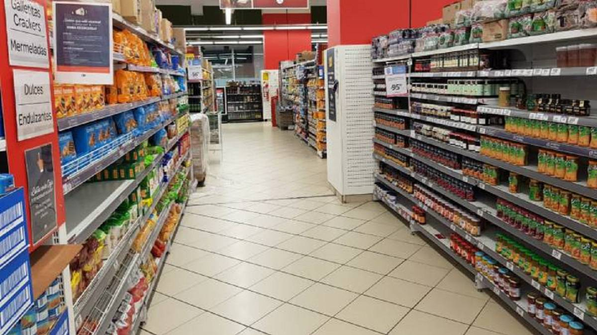
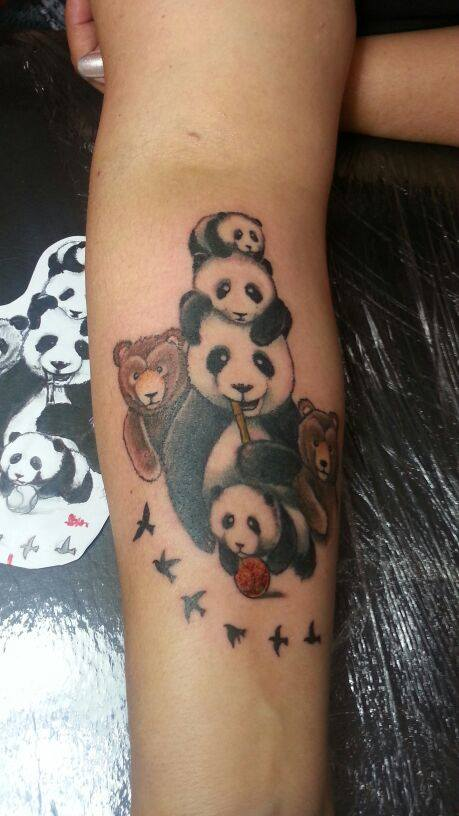
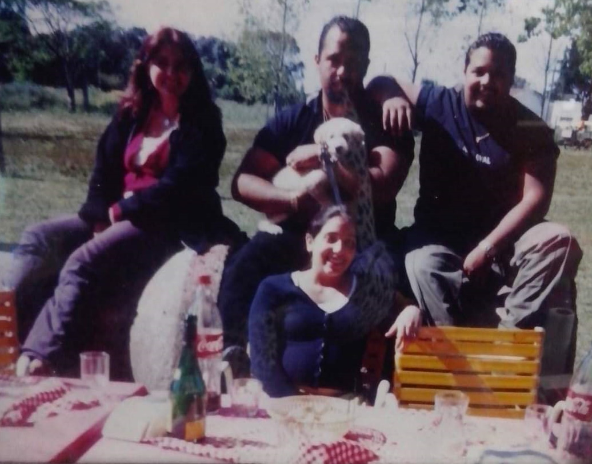
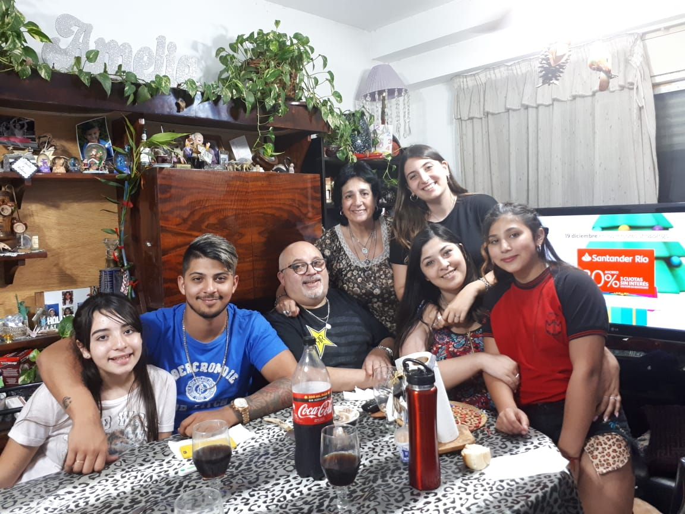

« Volver
¿Donde trabajó?
Amelia tubo diversos trabajos a lo largo de su vida.
Supermercado

Primero, Amelia, trabajó durante 10 años en un supermercado de cajera, fiambrera y repositora.
Coproar
Más tarde, hizo de administrativa en Coproar, una coopeartiva de productores asesores de seguros, durante 13 años.
Promotora de salud

Actualmente, Amelia es promotora de salud en Suterh. Ella organiza un montón de actividades para mejorar la salud y los hábitos. También conoció un montón de buenas amigas.
Y lo más importante...

Amelia es también ama de casa, mamá de 4 hijos (Sandra, Christian, Giselle, Dario), abuela de 6 nietos (Micaela, Melina, Ezequiel, Nicole, Iara y Benjamin). También es abuela de corazón de mi hermana, Daniela (son muy amorosas 🥰).
« Los 4 hijos de Amelia
« Amelia con su marido y 5 de sus nietos
 « Benjamin, nieto menor de Amelia
« Benjamin, nieto menor de Amelia
 « Amelia y Daniela, su amiga y nieta de corazón
« Volver
« Amelia y Daniela, su amiga y nieta de corazón
« Volver